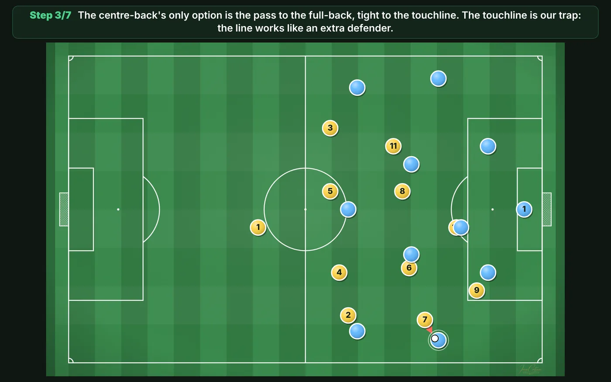
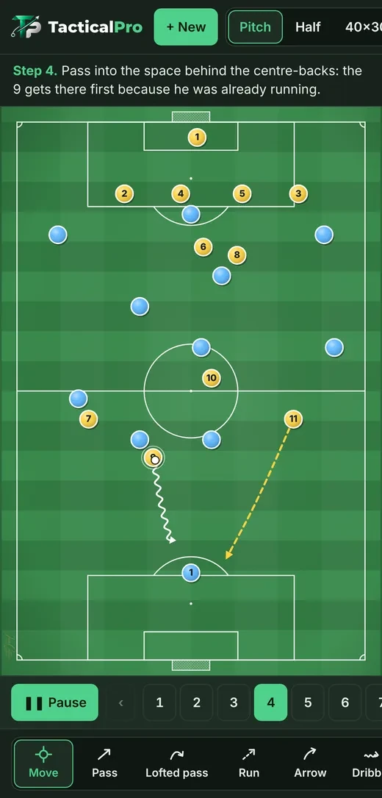
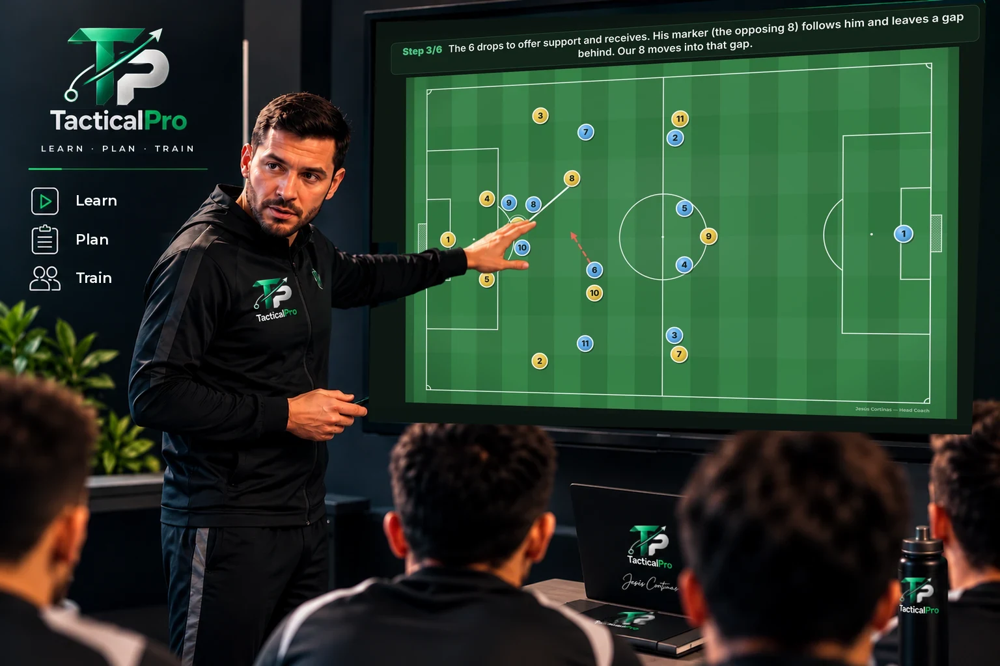
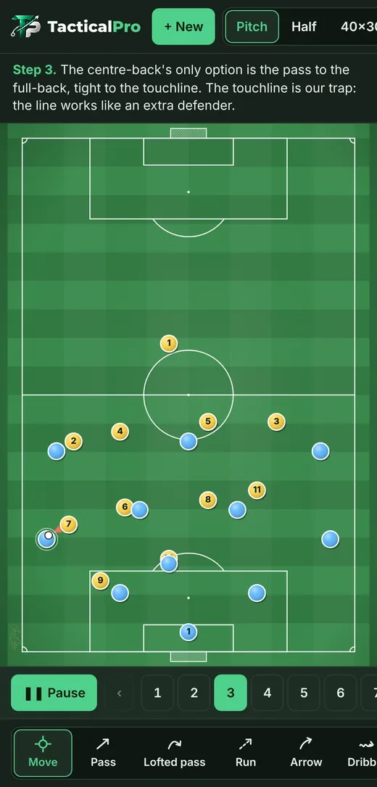
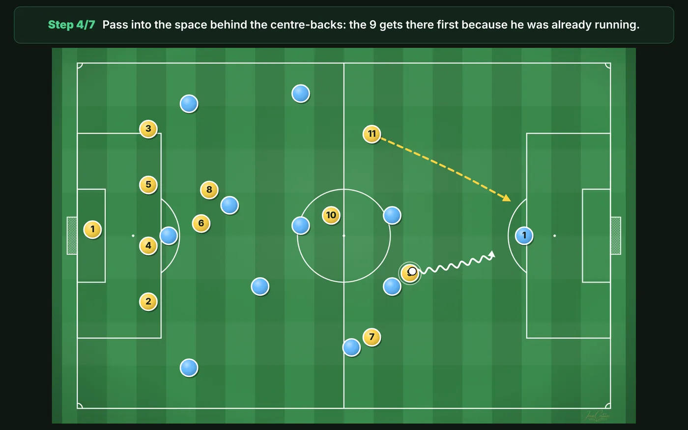
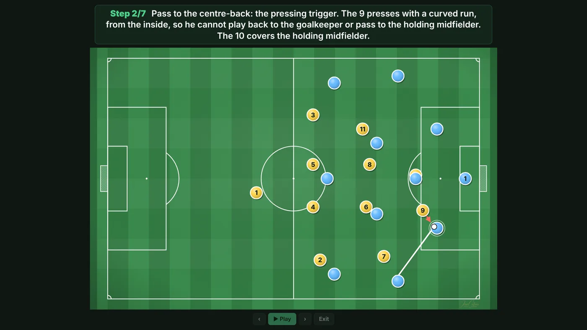

Your vision.
Your tactics.
Your team.
Tactical tools for people who live and teach football.
Create and animate tactical sequences, look up fundamentals and tips, use suggested sessions and share your ideas on video or in the team talk.
The current version is free and you can start without signing up. It works on phone, tablet and computer, even offline. How to add it to your home screen.


Three words, one app
TacticalPro helps you prepare and communicate your football ideas.
Understand the fundamentals
Practical resources: the phases of play, the channels, the systems, and tips on tactics and training.
Watch the demo →Prepare your sessions
Prepare sessions, drills and plays and adapt them to your team, starting from ready-to-use ideas.
Watch the demo →Explain it and take it to the pitch
Explain your ideas in the team talk and take them to the pitch with animated plays, projector mode and video.
Watch the demo →TacticalPro doesn't teach for the coach or decide for them. It gives them resources to learn, prepare, show and communicate their football ideas.
See how it works
Five real recordings of the app, in the order you'd use it: first the resources you get, then how to create and share your plays.
Fundamentals and tips
Look up the fundamentals whenever you need them: the phases of play, the channels, the systems, the blocks and a glossary, all explained simply. Plus practical tips on tactics, training and managing the group.
Real recording, with the text enlarged so it's easy to read.
Suggested sessions and drills
Adult 11-a-side sessions sorted by the days left until the match (for example, MD-3 means three days before). It's simple: pick a session, see its session blocks with durations and objectives, and every drill opens animated on the board so you can explain it or adapt it to your team.
They're ideas to use and adapt, not a season plan. Real recording, with the menu enlarged.
From a blank board to an animated play
An 11 v 11 built from scratch: you place the players, draw passes and runs, and add as many steps as you like. Each step can have a description, which will appear in the video you export.
Edited summary of a real recording. Watch the full recording (2.5 min).
Your video, with your brand
When you export, you choose the brand on the video: your name, your logo or your club crest. Then you turn on large text and the full-width pitch, check the preview and create the MP4.
Real recording, with the menu enlarged. The wait while the video is created has been cut. Watch the full recording.
This is the result
Building up against a high press, 11 v 11, in 6 steps. It's the MP4 exactly as it comes out of the app, ready to send on WhatsApp or show in the team talk.
This play is in the app: Templates › Creating space.
Open TacticalProYour ideas, in the team talk
In projector mode the play fills the whole screen, with each step's explanation in large text. Move between steps with the arrow keys, a presentation clicker or by tapping the sides.
On the screen, a real capture of projector mode. The room and the coach are an illustration.

And there's more

Players and lines your way
Passes, runs, dribbles and zones. Player markers with number, name and your team's colours. Draw with your finger or a pen like the S Pen.

70+ templates
Systems, blocks, pressing, transitions, creating space, set pieces and drills, ready to open and adjust to your team.

Offline on the pitch
After you open it the first time, it works without internet. Everything you create is saved on your device.
Frequently asked questions
How much does it cost?
The current version is free and you can start without signing up.
Do I need to sign up?
No. There are no accounts or passwords: you open the app and start. Your plays and your identity are saved on your device.
Can I transfer my saved plays to another device?
Yes. In «Plays», tap «Export backup» and a file is saved with your plays, their steps and texts, and your identity with your crest. On the other device, open TacticalPro, go to «Plays» and tap «Import backup». Anything missing is added without deleting or duplicating anything.
How do I add it to my home screen?
Open it with the «Open TacticalPro» button. On Android (Chrome), tap the ⋮ menu and choose «Install app» or «Add to Home screen». On iPhone or iPad (Safari), tap Share and then «Add to Home Screen». On a computer (Chrome or Edge), click the install icon that appears in the address bar.
Which devices does it work on?
On phone, tablet and computer, in the browser.
Do I need internet on the pitch?
No. Once you've opened it the first time, it works offline.
Can I use a pen like the S Pen?
Yes. With the pen you can draw and move the players, and the side button erases.
Is it useful if I'm new to tactics?
Yes. The Fundamentals section explains the 4 phases, the channels, the blocks and the formations from scratch, with example plays.
Is the app in English?
Yes. TacticalPro is available in Spanish and English. It opens in the language you chose on this website, and you can change it at any time from the language button in the app.
How do I share a play with my team?
From Export, save it as an MP4 video or an image and send it on WhatsApp, or show it in the team talk with projector mode.
Join the community
It's optional: the app works just the same without it. Write to us and we'll let you know about new features, or sign up as a tester for the Android version.
Need help?
If you have a question, find a bug or want to suggest an improvement, write to us. We reply in Spanish or English.

Start planning today
Learn · Plan · Train
The current version is free and you can start without signing up.